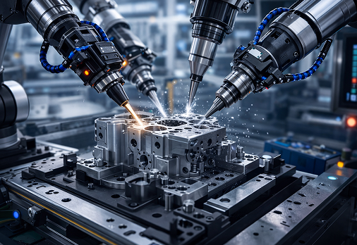
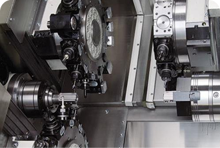
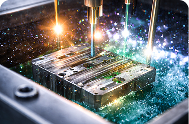
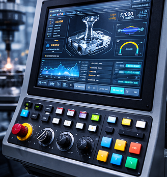
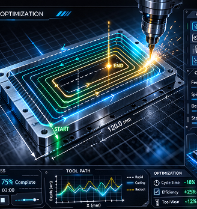

FeaturedTech-Driven
Precision Manufacturing
From CNC machining to automated sub-assembly lines
From CNC machining to automated sub-assembly lines
Accelerating component manufacturing using integrated CNC, robotics, and in-line inspection systems. Our workflows reduce cycle time, improve dimensional accuracy, and ensure batch-to-batch consistency across critical industrial applications.
Our engineering teams bring hands-on experience in precision component manufacturing and automation-driven workflows.
Tested machining strategies that improve cycle time, dimensional stability, and batch consistency.
Enabling industrial output through controlled production

High-precision multi-axis machining engineered for complex OEM- components.
Learn more
Industrial-grade anodizing, plating, and coating for enhanced durability.
Learn moreWe integrate advanced machining technologies and automated inspection platforms to help manufacturers achieve stable, high-efficiency production across complex component manufacturing environments.
Our approach is engineered for high-precision manufacturing environments, combining domain expertise with production-driven implementation to solve real factory floor challenges.
Request a QuoteHands-on experience across CNC machining and component finishing environments.
From prototyping to batch manufacturing and final assembly.
Reduced cycle time. Improved dimensional accuracy.
We streamlined the machining workflow for a tier-1 automotive supplier by integrating toolpath optimization and real-time machine monitoring systems.
PMAC significantly improved our component consistency and reduced our machining lead time across multiple production batches.
Trusted manufacturing partner to leading OEMs and Tier-1 suppliers.


We evaluate existing machining workflows, material handling systems, and quality checkpoints to identify performance gaps.
We develop optimized CNC programs and automation-ready assembly procedures for stable production output.
We continuously track machining accuracy, cycle time, and tool wear to improve long-term production efficiency.
B70/2, Sipcot Industrial Park, Irungattukottai, Sriperumpudur, Chennai - 602105
Challenge: Inconsistent part inspection and manual machining validation causing production delays.
Solution: Integrated CNC monitoring and automated inline quality inspection systems.
Result :

Featured

Have production requirements? Our engineering team can help.